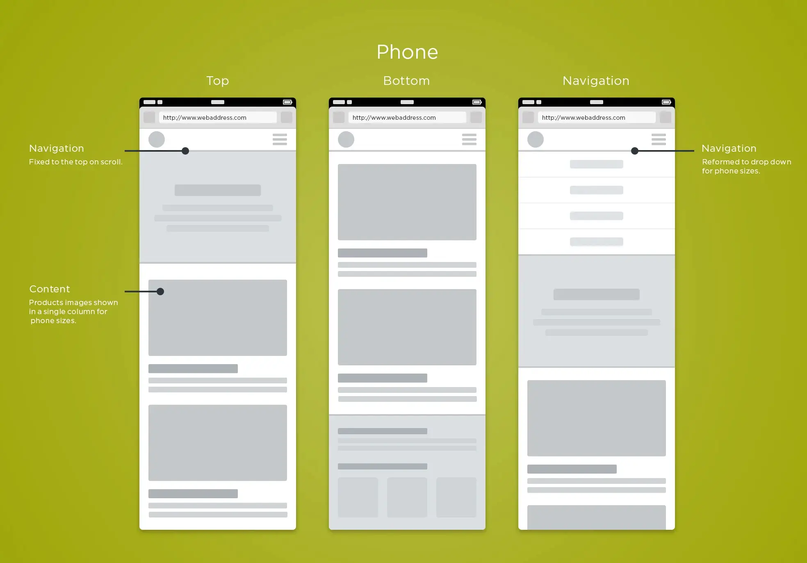
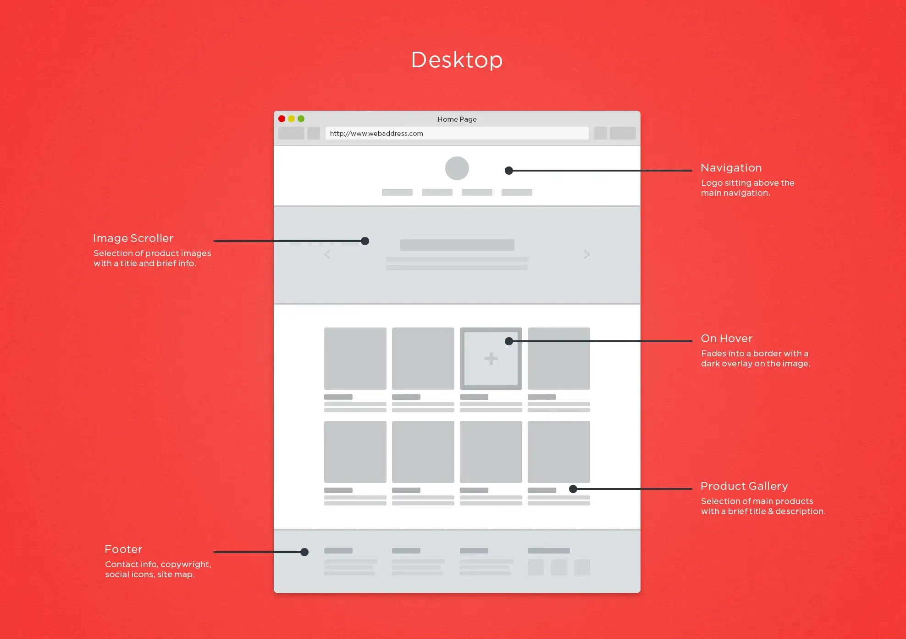

Site Name: The-Pad-Studio.org
Reason: "Pad Studio" is the name of the family-run studio where my brother works. He handles behind-the-scenes audio engineering and brings a professional and artistic vibe to his work. The name reflects a creative space where both novices and professionals can bring their projects to life.
This website will showcase my brother's audio engineering services, offer a platform for client reviews, list services and pricing, and provide a way for clients to schedule sessions online. It will serve as his digital portfolio and business interface.
Mobile View Wireframe:
Desktop View Wireframe:
